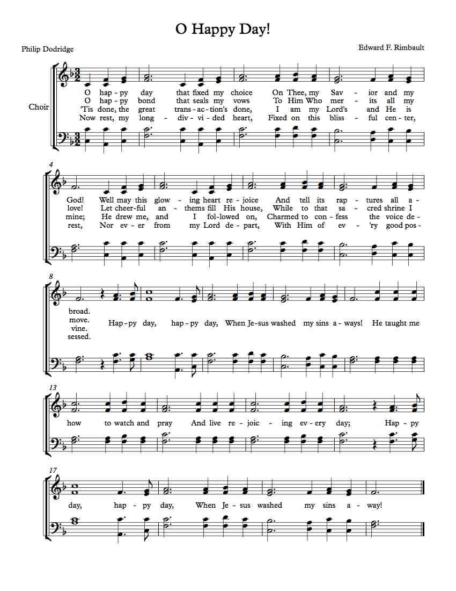

Search results
Storm Comin'
- Composer: The Wailin Jennys
- Period: Contemporary
- Voices: SSA
- Accompaniment: A cappella
Light of a Clear Blue Morning
- Composer: Dolly Parton
- Period: Contemporary
- Voices: SSA
- Accompaniment: A cappella | Obbligato soprano recorder
O Sister/Keep Me Steady Through The Storm
- Composer: Kathleen Allan
- Period: Contemporary
- Voices: SSA
- Accompaniment: Piano